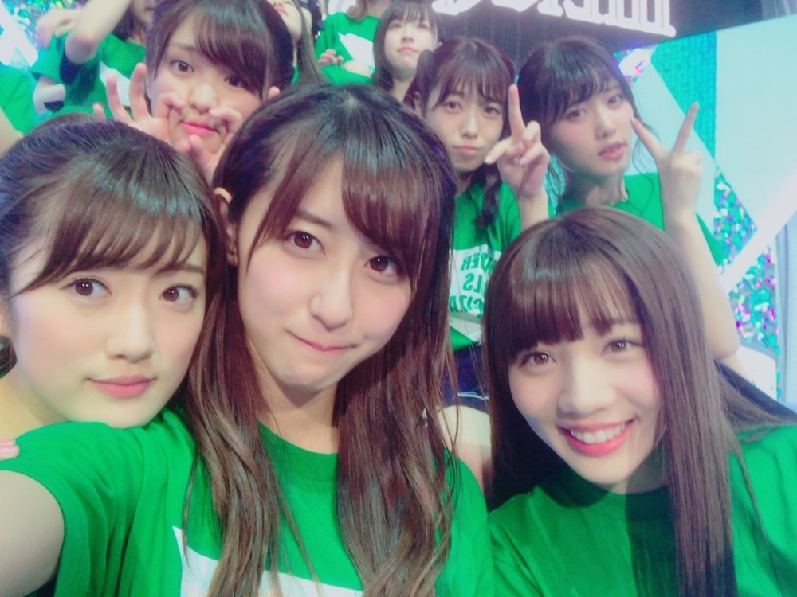
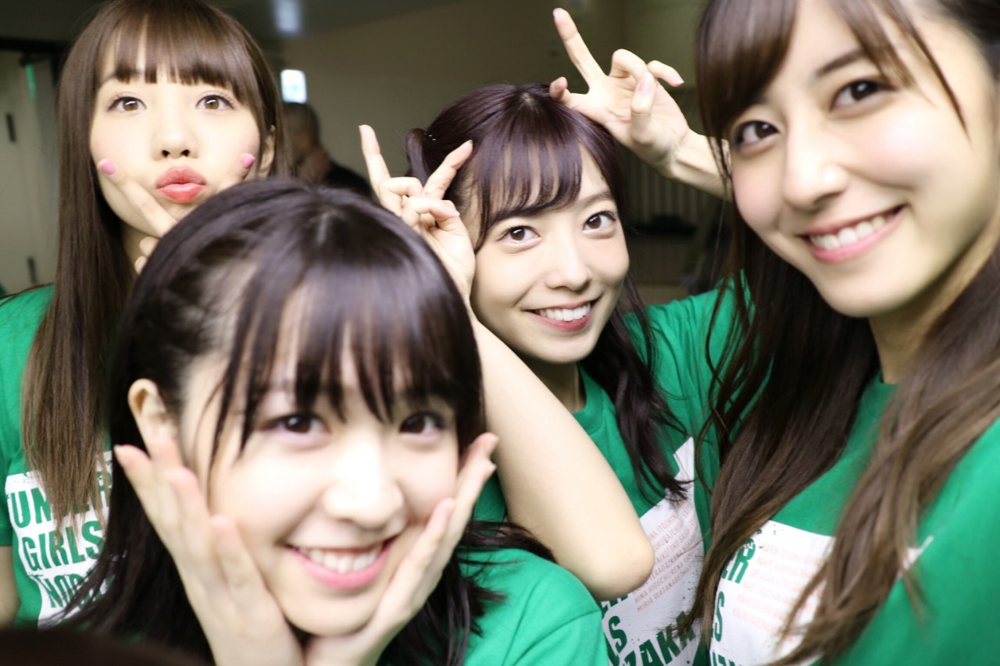

| 2016/12 09 Fri | 武道館、完全燃焼。 |
ちはるーむへようこそ！
今日はMerryChristmasライブ最終日、
そしてアンダー単独公演の最終日でした。
完全燃焼できました！
何も悔いはない！
心から楽しかったし、
頑張って良かったな、と
達成感も味わうことができました！

今回のライブでは、
本編で披露する楽曲は、
今までの全てのアンダー曲と
センター企画で披露する選抜曲のみでした！
だからアンダー曲が好きな方には
嬉しいセットリストになっていたのでは
ないかな？と思います◎
今回も行いました、センター企画。
アンダーメンバーは16人。
表題曲も16曲。
ということで全員が！
表題曲でセンターをしました。
私は今回『バレッタ』を披露いたしました！
バレッタの妖艶な感じが好きなので
それを意識して頑張ったのですが、
755のコメントを見ている限りでは
『ちはる』コールが嬉しくて
顔がにやけているのがバレていたみたい...
(๑¯ω¯๑)
バレッタではソロパートもあり
歌わせていただいたのですが、
物凄い緊張しました(> <)！
声が震えちゃったり
リズムを早くとってしまったり
反省点は沢山あるのですが...
気持ち良く歌えたので良かった♪
またソロパートを歌える機会があったら
その時はもっと良いものを聞かせられるように
頑張ります(﹡ˆ ˆ﹡)
もう一つ大きな目玉は、
『乃木團×乃木坂46』！！
今まで乃木團だけが乃木坂のライブで
披露する事は沢山ありましたが、
乃木團の演奏で乃木坂が歌うのは
今回が初めてでした！
生バンドは歌っていて最高に心地良かったし
みんなで合わせようという一体感が
とても好きでした。
乃木團メンバー、本当にお疲れ様！
みんな上手だったしカッコよかった(﹡ˆ ˆ﹡)
飛鳥もめーちゃんも
わざわざ駆け付けてくれてありがとう♪
私たちの思いは、届きましたか？
それぞれが胸の内に抱えている
熱い思いが皆さんの心に伝わっていれば
私たちは本望です。
ライブ開演前の、
メンバーそれぞれのメッセージも
是非見て欲しかったので
昨日のブログでは時間に余裕を持って来てね！
と書かせていただきました◎
アンダーメンバー、
まだまだ夢の途中です。
これからもっと上へと坂を登っていきます。
私たちから目を離さないでください！

来てくれた皆さん！
応募してくださった皆さん！
来れなかったけど応援してくださった皆さん！
本当にありがとうございました\( ˆ ˆ )/
---------------------------------♡
♬ ChihaMusic
「バレッタ」乃木坂46
しばらくずーっとこの曲のことを
考えていました。
カラオケに行って練習もしました。
実はバレッタを歌ったら、
その日一番の高得点が取れたよ◎
控えめな歌詞と、
片思いの切ない気持ちが
美しくてため息が出る。
"バレッタ 君らしく
いたずらっぽい目で
微笑んだのは なぜだ？"
の歌詞が好き。
女の子の不思議な魅力に魅了される男の子の
混乱しつつも少し嬉しい気持ちが素敵。
さぞかし女の子の微笑みは
美しいんだろうなと想像してしまう。
この曲を歌えることが出来て良かった！

ライブに来てくれた皆さん、
『ちはる』コールと『赤×青』のサイリウム、
本当に嬉しかったですヽ(；；)丿
サイリウムの色変えるの大変なのに
センターに合わせて変えてくださる
皆さんの愛に感動しました。
ありがとう。
文章沢山書きすぎてしまったかも...！
ここまで読んでくださってありがとう。
今日はぐっすり寝れそうです♪
おやすみ〜
斎藤ちはる
コメント(388)
2016/12/09 23:59